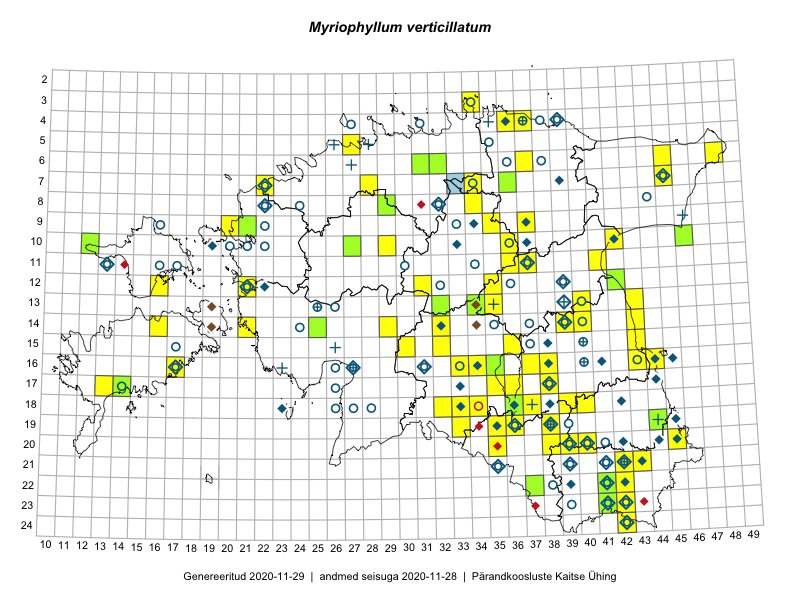

Myriophyllum verticillatum
Uuendatud: 2016-12-01
Kaardile koondatud taksonid: Myriophyllum verticillatum L.

Kaart põhineb 24 kirjel.
Kuvatud viited 20 esimesele andmebaasikirjele, ülejäänud PlutoFis
- Toomas Kukk, Eerik Leibak: 2015-07-29: 16-44: ala
- Tiit Hallikma, Toomas Kukk: 2015-06-10: 15-30: ala
- Katrit Karus, Tõnu Feldmann: 2015-07-30: 16-33: ala
- Katrit Karus, Tõnu Feldmann: 2015-07-31: 15-32: ala
- Katrit Karus, Tõnu Feldmann: 2015-08-03: 14-32: ala
- Katrit Karus, Tõnu Feldmann: 2015-08-03: 13-35: ala
- Katrit Karus, Tõnu Feldmann: 2015-08-05: 13-35: ala
- Katrit Karus, Tõnu Feldmann: 2015-08-05: 13-34: ala
- Katrit Karus, Tõnu Feldmann: 2015-08-07: 07-34: ala
- Ott Luuk, Hannes Pehlak: 2015-06-10: 14-29: ala
- Toomas Kukk: 2014-07-09: 19-44: ala
- Thea Kull, Meeli Mesipuu: 2015-08-14: 13-43: GPS punkt
- Ott Luuk, Toivo Sepp: 2015-08-21: 10-29: ala
- Eeva-Maria Jeletsky, Tarmo Niitla: 2015-08-03: 23-41: ala
- Karin Kikas, Elle Rajandu: 2015-06-01: 09-37: ala
- Kadi Palmik, Helle Mäemets: 2015-07-21: 09-35: ala
- Kadi Palmik, Helle Mäemets: 2015-07-21: 10-36: ala
- Helle Mäemets, Mare Leis: 2015-07-06: 15-36: ala
- Helle Mäemets, Mare Leis: 2015-06-25: 17-36: ala
- Aat Sarv: 2015-07-01: 16-35: ala